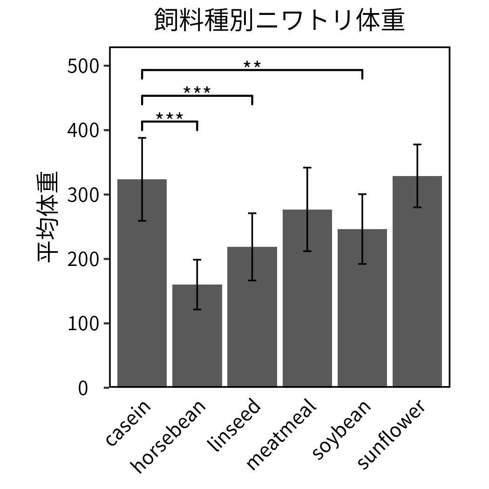
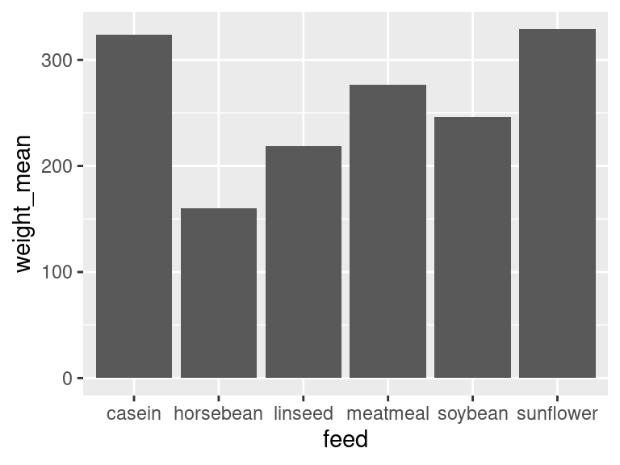
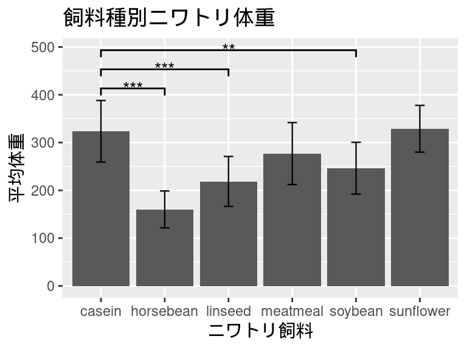
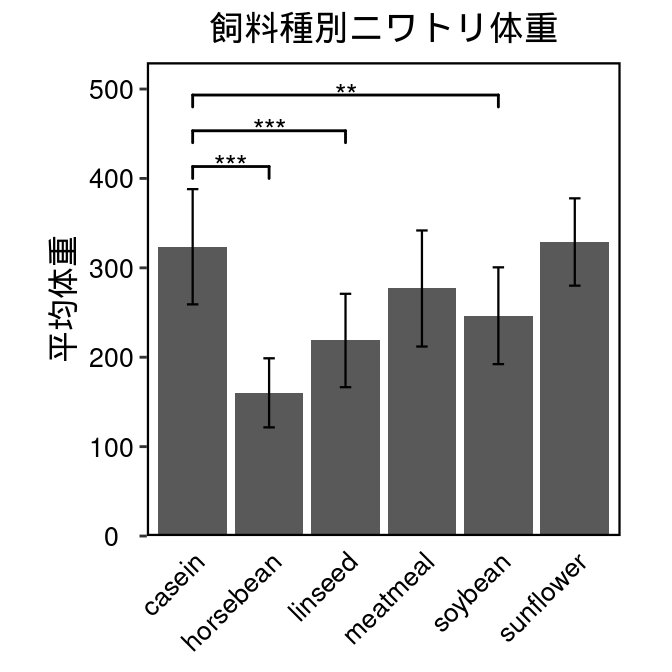

# データセットの中身の確認
head(chickwts) weight feed
1 179 horsebean
2 160 horsebean
3 136 horsebean
4 227 horsebean
5 217 horsebean
6 168 horsebeanInfo 2025 8/22 公開しました
2025年8月8日
2025年8月10日

ggplot2を用いて左のグラフを作る。
R標準のデータセットchickwtsを使って棒グラフを作成します。
データセットchickwtsは、与えた餌ごとの鶏の体重のデータで、一列目weightに鶏の体重、二列目feedに餌の種類が記載されています。
weight feed
1 179 horsebean
2 160 horsebean
3 136 horsebean
4 227 horsebean
5 217 horsebean
6 168 horsebeanまずggplot2を使うために必要なtidyverseパッケージをインポートします。
exactRankTestsパッケージは後で検定を行うときに使います。（検定を行わない場合は不要）
ggsignifパッケージは有意差をグラフ内に書き込むときに用います。（これも同様に、有意差を書き込まない場合は不要）
データセットは測定値しか含まれていません。
棒グラフは平均値と標準偏差の値を用いて作成したいので、データを整形し、平均値と標準偏差をまとめた新しいデータセットchickwts_sum_dataを作成します。
そのために、与えた餌feedごとにグループ化して、平均feed_meanと標準偏差sdを求めます。
chickwts_sum_data <- chickwts %>%
group_by(feed) %>%
summarize(weight_mean=mean(weight), sd=sd(weight))
# 作成したデータセットの中身を確認
head(chickwts_sum_data)# A tibble: 6 × 3
feed weight_mean sd
<fct> <dbl> <dbl>
1 casein 324. 64.4
2 horsebean 160. 38.6
3 linseed 219. 52.2
4 meatmeal 277. 64.9
5 soybean 246. 54.1
6 sunflower 329. 48.8これでデータセットの準備は整いました。
次は、作成したデータセットchickwts_sum_dataを用いてggplot2で棒グラフを作ります。
ggplot2でグラフを作成し、bar_plotという変数に書き込んでいきます。
まず、ggplot(データ, aes(x=x軸に使うデータ, y=y軸に使うデータ))を書き込みます。
次にggplot2の棒グラフ作成関数であるgeom_bar()を使って棒グラフを作成します。geom_bar()内で指定しているstatは、データの扱い方です。デフォルトだと要素数をカウントしてしまうので、今回のように棒グラフの高さがそのまま入っているデータを扱う際はidentityを指定します。
bar_plot <- ggplot(chickwts_sum_data, aes(x=feed, y=weight_mean)) +
geom_bar(stat='identity')
print(bar_plot)
geom_errorbarでエラーバーを付けます。yminとymaxはそれぞれ平均から標準偏差を引いた値と足した値を使うことでエラーバーの範囲を指定できます。
caseinとその他の飼料で検定を行います。
検定にも様々ありますが、今回はウィルコクソンの順位和検定、有意水準0.05で検定します。
test_casein_horsebean <- wilcox.exact(
x = filter(chickwts, feed=='casein')[,1],
y = filter(chickwts, feed=='horsebean')[,1],
paired = FALSE)
print(test_casein_horsebean)
Exact Wilcoxon rank sum test
data: filter(chickwts, feed == "casein")[, 1] and filter(chickwts, feed == "horsebean")[, 1]
W = 117, p-value = 2.165e-05
alternative hypothesis: true mu is not equal to 0test_casein_linseed <- wilcox.exact(
x = filter(chickwts, feed=='casein')[,1],
y = filter(chickwts, feed=='linseed')[,1],
paired = FALSE)
print(test_casein_linseed)
Exact Wilcoxon rank sum test
data: filter(chickwts, feed == "casein")[, 1] and filter(chickwts, feed == "linseed")[, 1]
W = 128.5, p-value = 0.0005325
alternative hypothesis: true mu is not equal to 0test_casein_meatmeal <- wilcox.exact(
x = filter(chickwts, feed=='casein')[,1],
y = filter(chickwts, feed=='meatmeal')[,1],
paired = FALSE)
print(test_casein_meatmeal)
Exact Wilcoxon rank sum test
data: filter(chickwts, feed == "casein")[, 1] and filter(chickwts, feed == "meatmeal")[, 1]
W = 94, p-value = 0.09084
alternative hypothesis: true mu is not equal to 0test_casein_soybean <- wilcox.exact(
x = filter(chickwts, feed=='casein')[,1],
y = filter(chickwts, feed=='soybean')[,1],
paired = FALSE)
print(test_casein_soybean)
Exact Wilcoxon rank sum test
data: filter(chickwts, feed == "casein")[, 1] and filter(chickwts, feed == "soybean")[, 1]
W = 138, p-value = 0.004283
alternative hypothesis: true mu is not equal to 0test_casein_sunflower <- wilcox.exact(
x = filter(chickwts, feed=='casein')[,1],
y = filter(chickwts, feed=='sunflower')[,1],
paired = FALSE)
print(test_casein_sunflower)
Exact Wilcoxon rank sum test
data: filter(chickwts, feed == "casein")[, 1] and filter(chickwts, feed == "sunflower")[, 1]
W = 72.5, p-value = 0.9893
alternative hypothesis: true mu is not equal to 0検定の結果、p-valueが有意水準0.05以下なのはhorsebean、linseed、soybeanの3つでした。
したがって、caseinからこれら３つのグラフに線を引いて、有意差を示していきます。
bar_plot <- bar_plot +
geom_signif(
comparisons = list(c('casein','horsebean')),
y_position = 400,
annotation = '***',
vjust = 0.7,
tip_length = 0.05
) +
geom_signif(
comparisons = list(c('casein','linseed')),
y_position = 440,
annotation = '***',
vjust = 0.7,
tip_length = 0.05
) +
geom_signif(
comparisons = list(c('casein','soybean')),
y_position = 480,
annotation = '**',
vjust = 0.7,
tip_length = 0.05
)
print(bar_plot)
bar_plot <- bar_plot +
theme(
## テキストの設定
plot.title = element_text(size = 13, color="black", hjust = 0.5),
axis.title.x = element_blank(),
axis.text.x = element_text(size = 10, color="black", angle = 45, hjust = 1),
axis.title.y = element_text(size = 12, color="black", hjust = 0.5),
axis.text.y = element_text(size = 10, color="black", hjust = 0.5),
axis.ticks.x = element_blank(),
## 枠・目盛りの設定
legend.title = element_blank(),
panel.grid.major = element_blank(),
panel.grid.minor = element_blank(),
panel.border = element_rect(color='black', fill='transparent', linewidth=0.8),
panel.background = element_rect(fill = "white",color = NA),
aspect.ratio = 1,
) +
scale_y_continuous(limits=c(0,530), expand=c(0,0))
print(bar_plot)
このように作成したプロットbar_plotは、ggsaveコマンドで画像ファイルとして保存することができます。